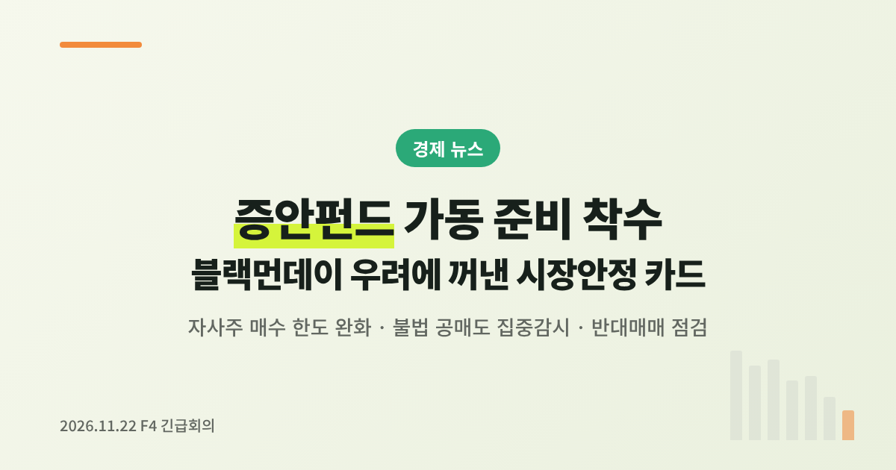
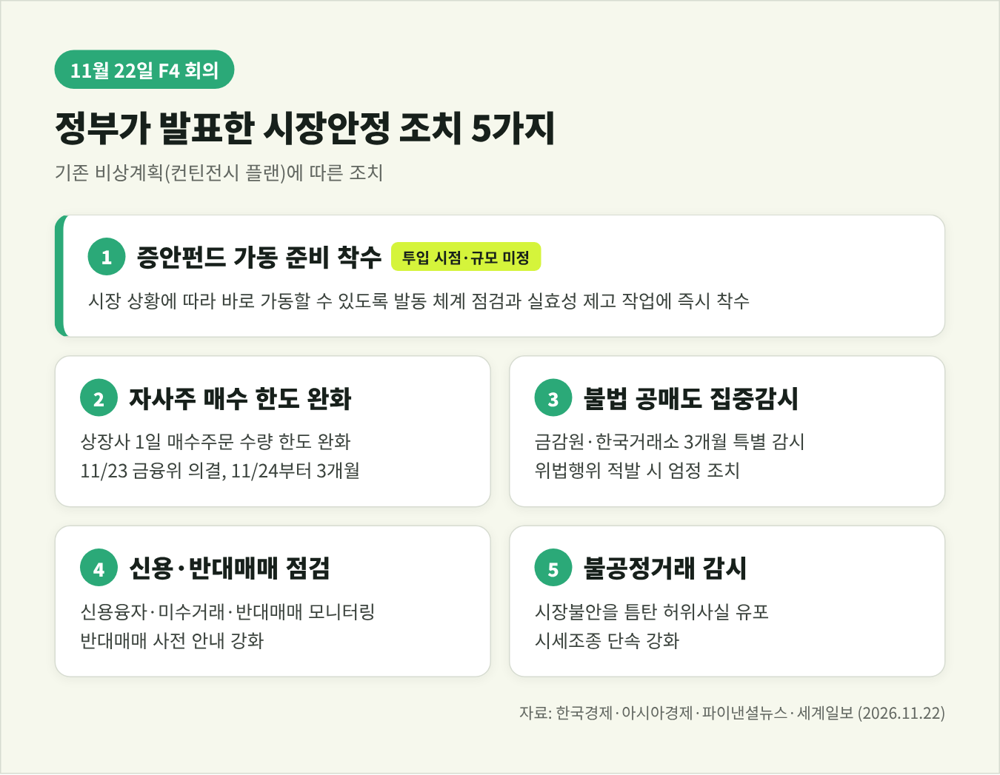
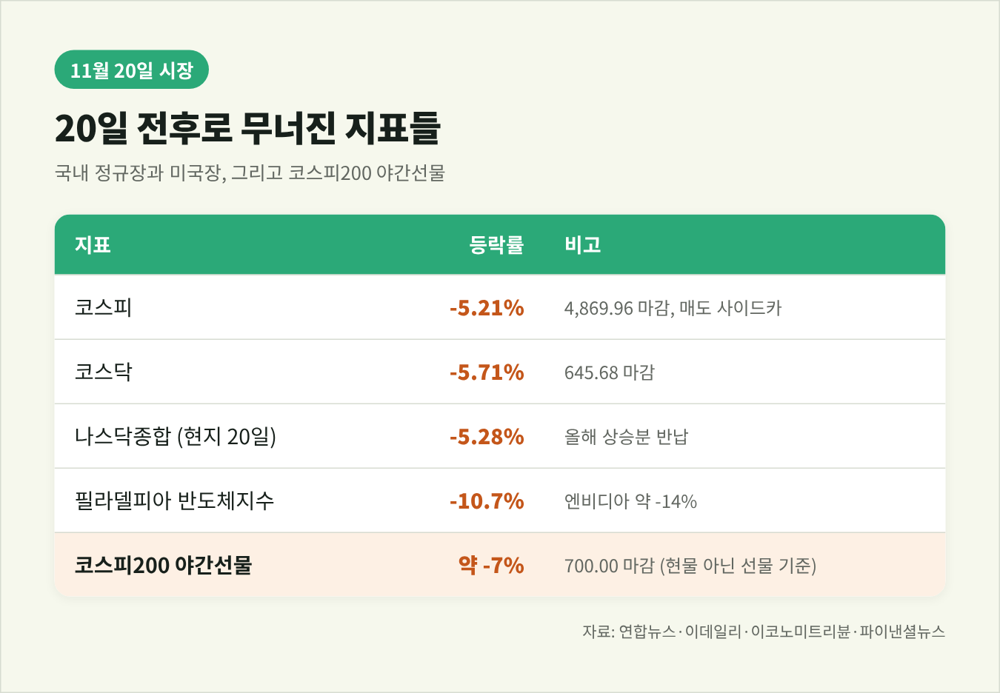
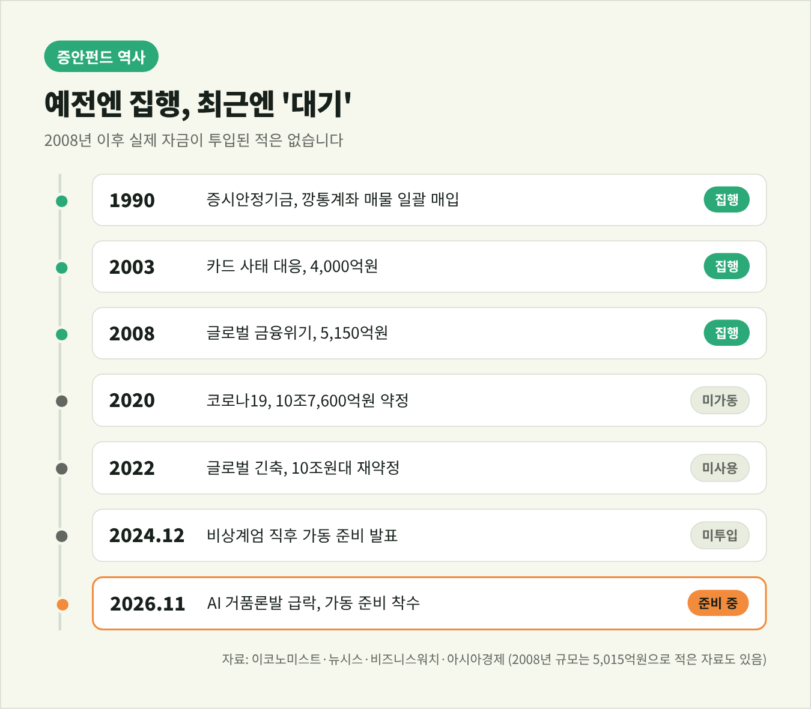
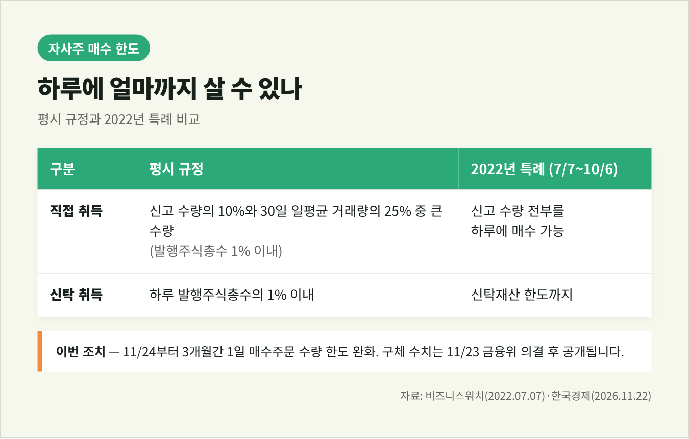
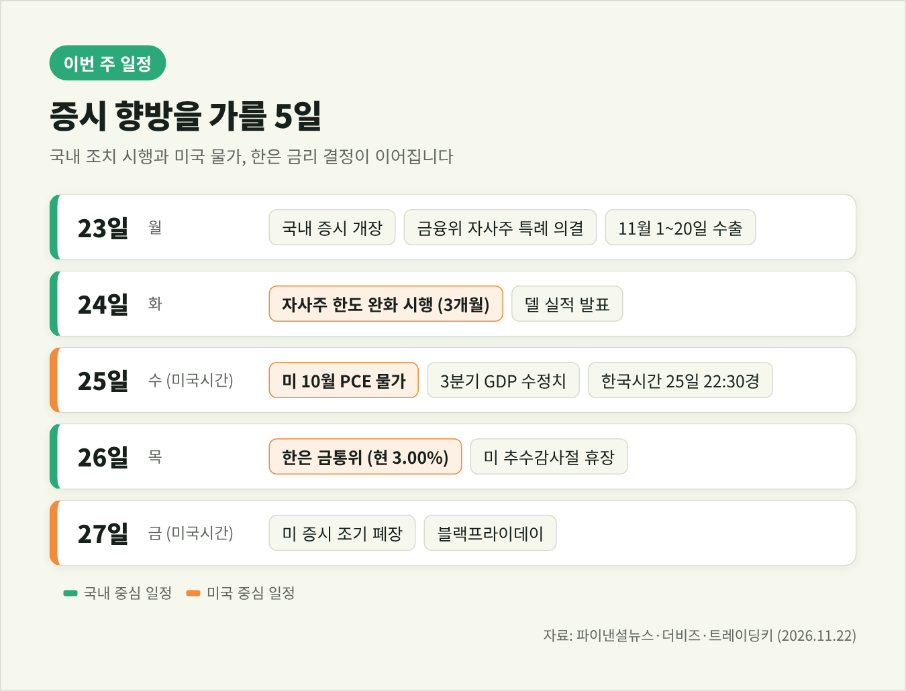

증안펀드 가동 준비 착수, 블랙먼데이 우려에 정부가 꺼낸 시장안정 카드

이번 글에서는 11월 22일 정부가 발표한 증권시장안정펀드(증안펀드) 가동 준비와 시장안정 조치를 정리해 보겠습니다. 무엇이 발표됐는지, 증안펀드는 어떤 구조인지, 월요일 장을 앞두고 무엇을 봐야 하는지 차례로 짚어봅니다.
3줄 요약
- 정부·금융당국이 22일 긴급회의(F4)를 열고 증안펀드를 시장 상황에 따라 바로 가동할 수 있도록 준비작업에 착수했습니다. 다만 투입 시점과 규모는 정해지지 않았습니다.
- 자사주 매수 한도 완화(24일부터 3개월), 불법 공매도 3개월 집중감시, 반대매매 점검이 함께 나왔습니다.
- 20일 코스피는 5.21% 내린 4,869.96에 마감했고, 코스피200 야간선물은 약 7% 떨어졌습니다. 이번 주에는 미국 PCE 물가(25일)와 한은 금통위(26일)가 이어집니다.
■ 일요일 오후에 열린 긴급회의
22일 오후 정부서울청사에서 관계기관 합동 긴급 시장상황점검회의가 열렸습니다. 이형일 부총리 겸 재정경제부 장관이 주재했습니다. 신현송 한국은행 총재, 이억원 금융위원장, 이찬진 금융감독원장이 참석했습니다. 흔히 'F4 회의'라고 부르는 자리입니다.
참석자들은 증시 변동성이 크게 커졌다고 진단했습니다. 원인으로는 AI·반도체 산업을 둘러싼 불확실성과 미국 금리 인상 우려를 꼽았습니다. AI 기업의 수익성과 자금조달, 미국의 데이터센터 규제, 반도체 수출통제 강화 같은 정책 위험도 거론됐습니다.
동시에 선을 하나 그었습니다. AI 산업의 중장기 성장 기대는 여전히 유효하니, 과도한 불안과 투매는 경계하자는 것입니다. 조치는 기존 비상계획(컨틴전시 플랜)에 따라 나왔습니다.

발표 내용은 다섯 갈래입니다.
- 증안펀드 가동 준비 — 발동 체계를 점검하고 실효성을 높이는 작업에 즉시 착수합니다.
- 자사주 매수 한도 완화 — 상장사의 하루 자사주 매수주문 수량 한도를 24일부터 3개월간 풉니다. 23일 금융위원회 의결을 거칩니다.
- 불법 공매도 특별 집중감시 — 금감원과 한국거래소가 3개월간 운영합니다.
- 신용융자·미수거래·반대매매 점검 — 연쇄 매도를 막기 위해 동향을 살피고, 반대매매 사전 안내를 강화합니다.
- 불공정거래 감시 — 혼란을 틈탄 허위사실 유포와 시세조종을 단속합니다.
여기서 짚어둘 대목이 있습니다. '가동 준비'는 '매수 개시'가 아닙니다. 아시아경제는 이번 발표가 당장 주식을 사들인다는 뜻은 아니라고 설명했습니다. 투입 시점과 규모도 공개되지 않았습니다.
■ 왜 지금인가: 고점 대비 반토막 가까이 밀린 코스피
배경에는 가파른 하락이 있습니다. 20일 코스피는 267.93포인트(5.21%) 내린 4,869.96에 마감했습니다. 코스닥도 5.71% 떨어진 645.68이었습니다. 두 시장 모두 매도 사이드카가 발동됐습니다. 삼성전자는 7.01%, SK하이닉스는 5.92% 내렸습니다.
흐름을 길게 보면 충격이 더 큽니다. 코스피는 6월 19일 장중 9,385.59까지 올랐습니다. 연합뉴스 집계로 지금은 그 고점보다 48% 넘게 낮습니다. 10월에 16.2% 빠졌고, 11월에도 19일 기준 10% 넘게 내렸습니다. 두 달 연속 두 자릿수 하락입니다.
하락의 진원지는 미국이었습니다. 20일(현지시간) 나스닥종합지수는 5.28% 급락해 올해 상승분을 모두 반납했습니다. 필라델피아 반도체지수는 10% 넘게 떨어졌습니다. 이코노미트리뷴은 엔비디아가 약 14% 하락했다고 전했습니다.
여기에 앤트로픽의 나스닥 상장이 겹쳤습니다. 공모가는 83달러, 첫날 종가는 97.17달러였습니다. 상장 자체는 흥행했지만 투자심리를 되살리지는 못했습니다. 기존 AI·반도체 주도주를 팔아 신규 상장주를 사는 수급이 오히려 하락 압력이 됐다는 분석이 나왔습니다. 미국 10년물 국채금리가 5%를 넘긴 점도 부담입니다. 비트코인 역시 15일 기준 11일 동안 15.6% 하락하는 등 위험자산 전반이 흔들렸습니다.

결정타는 주말 사이의 야간선물이었습니다. 코스피200 야간선물은 700.00에 마감했습니다. 정규장 종가보다 약 7% 낮은 수준입니다. 해외에서 거래된 삼성전자와 SK하이닉스 추정가도 8~9%대 하락했습니다. 월요일 '블랙먼데이'에 대한 우려가 커진 이유입니다.
■ 증안펀드는 어떤 구조인가
증안펀드는 금융회사들이 돈을 모아 주식이나 ETF를 사들이는 장치입니다. 급락장에서 매수 주체가 되어 투매의 연쇄를 끊는 것이 목적입니다.
평소에 현금을 쌓아두지는 않습니다. 필요할 때 출자금을 납입받는 '캐피털콜' 방식입니다. 정부 관계자는 시스템 위험 같은 긴급 상황에서 한시적으로 쓰는 것이 원칙이라고 설명해 왔습니다.
가장 최근에 큰 틀이 짜인 것은 2020년 3월입니다. 코로나19 충격 당시 '다함께코리아펀드'라는 이름으로 약정이 체결됐습니다. 금융권 23곳이 10조원, 한국거래소·예탁결제원 등 증권유관기관 4곳이 7,600억원을 맡았습니다. 4대 금융지주가 각 1조원, 증권사들이 1조5,000억원을 분담하는 식이었습니다.

역사를 보면 흥미로운 패턴이 있습니다.
예전엔 실제로 돈이 들어갔습니다. 1990년 증시안정기금은 깡통계좌 매물을 일괄 매입했습니다. 2003년 카드 사태 때는 4,000억원, 2008년 금융위기 때는 5,150억원(일부 자료는 5,015억원)이 조성돼 투입됐습니다.
지금은 '대기'가 기본값입니다. 2020년 10조7,600억원 규모로 만들어졌지만, 증시가 빠르게 반등하면서 가동되지 않았습니다. 2022년 재약정 때도 쓰이지 않았습니다. 2024년 12월 비상계엄 사태 때도 가동 준비를 밝혔지만 실제 투입은 없었습니다. 세계일보는 2008년 이후 18년간 투입된 적이 없다고 정리했습니다.
■ 쟁점: 시장 개입인가, 안전판인가
증안펀드를 두고는 오래된 논쟁이 있습니다.
효과가 있다는 쪽은 심리적 신호를 강조합니다. 한 자본시장 관계자는 증안펀드가 주가를 직접 끌어올리기보다 서킷브레이커처럼 심리 안정 장치로 작동한다고 봤습니다. 투입 논의가 나올 무렵 바닥이 형성된 사례가 많았다는 분석도 있습니다. 다만 그것이 펀드 덕분인지, 우연인지는 단정하기 어렵습니다.
신중해야 한다는 쪽은 규모와 왜곡을 지적합니다. 머니투데이가 인용한 업계 관계자는 펀드 규모가 코스피 시가총액의 약 0.23%에 불과하다고 했습니다. 특정 가격을 방어하면 가격 발견 기능이 흐려지고, 손실이 출자한 금융회사에 떠넘겨질 수 있다는 우려도 있습니다. 급락 때마다 정부가 받쳐준다는 기대가 굳어지면, 투자자가 위험을 가볍게 보는 도덕적 해이로 이어질 수 있다는 비판도 따라붙습니다.
정부 안에서도 온도 차가 감지됩니다. 이재명 대통령은 13일 자본시장 정책간담회에서 100조원 증안펀드 조성 제안을 두고 "이게 과연 근본적으로 시장 안정에 도움이 되느냐, 시장 개입 아니냐"고 반문했습니다(EBN 보도). 다만 실효적인 작동 방법과 적정 규모는 점검해볼 필요가 있다고 덧붙였습니다. 이억원 금융위원장도 같은 날 금융시스템 위험이 생기는 긴급·예외적 상황에만 써야 한다는 입장을 밝혔습니다.
정치권에서는 더 빠른 대응을 요구하는 목소리가 나왔습니다. 국민의힘 나경원 의원은 22일 이데일리 보도에서 "코스피 야간 7% 넘게 폭락"을 언급하며 월요일 개장 전에 증안펀드 가동 규모와 시점을 공개하라고 요구했습니다. 반대매매 연쇄 충격과 레버리지 ETF 손실에 대한 비상대책도 촉구했습니다. 참고로 7%대 하락은 현물 지수가 아니라 야간선물 기준입니다.
비즈니스워치는 이번 대책이 실제 투입보다 대응 의지를 보여주는 데 무게가 실렸다고 분석했습니다. '준비'만 반복하면 신호의 힘이 약해질 수 있다는 지적도 함께 남겼습니다.
■ 자사주 매수 완화와 공매도 감시는 무엇을 바꾸나
자사주 매수 한도 완화는 기업이 직접 매수 주체가 되도록 길을 넓히는 조치입니다. 평시 규정상 직접 취득은 하루에 신고 수량의 10%와 최근 30일 일평균 거래량의 25% 중 큰 수량까지만 주문할 수 있습니다. 2022년 특례 때는 신고 수량 전부를 하루에 살 수 있도록 했습니다. 이번 완화의 구체적인 수치는 23일 금융위 의결 이후 확인해야 합니다.

과거 경험은 참고가 됩니다. 2020년 3월 한도를 풀었을 때 2주 동안 자사주 취득 공시가 266건 쏟아졌습니다. 2012~2019년 하루 평균 1.2건과 비교하면 이례적인 숫자입니다. 다만 자본시장연구원은 실제 취득률이 평균 87%에 그쳤고, 일부는 지배주주의 사적 동기가 작용했을 수 있다고 지적했습니다. 공시만 보고 판단하기보다 실제 매입 여부를 확인할 필요가 있다는 뜻입니다.
공매도 집중감시와 반대매매 점검은 '하락의 가속 장치'를 겨냥합니다. 신용으로 산 주식이 담보 부족으로 강제 매도되면, 그 물량이 다시 주가를 끌어내립니다. 이번 조치는 이 악순환을 미리 끊으려는 의도로 읽힙니다.
■ 이번 주 무엇을 봐야 하나
월요일 장의 첫 번째 관전 포인트는 야간선물 하락폭이 현물에 얼마나 반영되느냐입니다. F4 발표가 개장 전 심리를 어느 정도 붙잡을지도 지켜볼 대목입니다.

일정은 촘촘합니다.
- 23일(월): 금융위 자사주 특례 의결, 11월 1~20일 수출 발표
- 24일(화): 자사주 매수 한도 완화 시행, 델 실적 발표
- 25일(수, 미국시간): 10월 PCE 물가와 3분기 GDP 수정치. 한국시간으로는 25일 밤 10시 30분 무렵입니다. NH투자증권은 근원 PCE를 3.2%로 예상했습니다.
- 26일(목): 한국은행 금통위. 현재 기준금리는 3.00%이고, 0.25%포인트 인상 전망이 나옵니다. 같은 날 미국 증시는 추수감사절로 휴장합니다.
- 27일(금): 미국 증시 조기 폐장
증권가 전망은 엇갈립니다. NH투자증권은 이번 주 코스피 밴드를 5,000~6,100으로 제시했지만, 지난주 4,900선이 깨져 하단을 다시 봐야 한다는 단서가 붙었습니다. LS증권은 4,800~5,400으로 더 보수적입니다. 대신증권 이경민 연구원은 미국 PCE가 반등의 상단을 정할 핵심 변수라고 봤습니다. NH투자증권 나정환 연구원은 외국인 거래가 줄어 적은 매매에도 변동성이 커질 수 있다고 경고했습니다.
변수는 결국 세 가지로 모입니다. 미국 물가와 금리, AI 산업 수익성에 대한 신뢰, 그리고 외국인 수급입니다. 지난주에만 외국인은 코스피에서 약 3조4,000억원을 순매도했습니다. 개인이 약 2조6,500억원을 받아냈습니다. 증안펀드가 이 흐름을 바꿀 수 있을지는 아직 알 수 없습니다.
정리하면 이렇습니다. 정부는 이번에 '언제든 쏠 수 있다'는 신호를 보냈고, 실제 방아쇠는 아직 당기지 않았습니다. 그 신호가 시장의 공포를 누그러뜨릴지는 월요일 개장과 이번 주 물가·금리 이벤트가 판가름할 것입니다.
"준비는 신호이고, 집행은 결단이다."
과거처럼 준비 선언만으로 바닥이 만들어질지 묻는다면, 이번에는 숫자를 하나씩 확인하며 답을 기다려 보시길 권합니다.
본 글은 정보 제공 목적으로 작성되었으며 특정 종목·상품에 대한 투자 권유가 아닙니다. 투자 판단과 그 결과의 책임은 투자자 본인에게 있습니다.
참고자료
- 한국경제 - 정부, 증시안정펀드 즉시 가동 위한 준비작업 착수한다 (2026.11.22)
- 아시아경제 - 블랙먼데이 공포에 당국 비상…"증안펀드 가동 준비 착수"(종합) (2026.11.22)
- 파이낸셜뉴스 - F4 "시장상황 따라 증안펀드 바로 가동 준비 착수" (2026.11.22)
- 세계일보 - '검은 월요일' 우려에…정부 증시안정펀드 가동 준비 착수 (2026.11.22)
- 이데일리 - 나경원 "코스피 야간 7% 넘게 폭락…월요일 '블랙먼데이' 우려" (2026.11.22)
- 뉴스핌 - AI·반도체 불안에 흔들린 증시…정부, 증안펀드 '즉시 가동' 준비 (2026.11.22)
- 비즈니스워치 - '검은 월요일' 우려에 정부 긴급 대응…증안펀드 가동 준비 (2026.11.22)
- SBS - F4 "시장 상황 따라 증안펀드 바로 가동할 수 있게 준비 착수" (2026.11.22)
- 연합뉴스(서플 게재) - 코스피 추락 어디까지…앤트로픽 역대급 IPO에도 투심 회복 실패 (2026.11.20)
- 이코노미트리뷴 - 코스피 야간선물 7%, 나스닥 선물 5.6% 급락 (2026.11.22)
- 뉴스1 - 5000선 무너진 코스피…美 AI주 급락에 '블랙먼데이' 공포 (2026.11.22)
- 파이낸셜뉴스 - AI 논란이 최대변수…美물가도 지켜봐야 (2026.11.22)
- 파이낸셜뉴스 - "코스피, 역사적 저평가 영역" vs "美 증시 급락에 거래 위축" (2026.11.22)
- 더비즈 - 코스피 5000선 회복 가능할까…美 물가·한은 금통위 결과 촉각 (2026.11.22)
- 트레이딩키 - 주간 전망: 미국 3분기 GDP 및 10월 PCE 같은 날 발표 (2026.11.22)
- EBN(인베스팅닷컴) - "증안펀드 100조 조성하자"…李 "시장 개입 논란, 신중해야" (2026.11.13)
- 머니투데이 - 급락장 속 증안펀드 등판론 솔솔 (2026.10.19)
- 뉴시스 - 요동치는 증시에 또 거론되는 '증안펀드'…금융당국은 '신중모드' (2026.03.05)
- 뉴시스 - 4개월 만에 또 필요해진 증안펀드 카드…이번엔 투입되나 (2025.04.08)
- 이코노미스트 - 10조 규모 증안펀드 이달 중순 재약정 체결 마무리 (2022.10.16)
- 비즈니스워치 - 다함께코리아펀드 출자 내역 (2020.03.31)
- 비즈니스워치 - 자사주 매수주문 특례 조치 (2022.07.07)
- 자본시장연구원 - 코로나19와 자사주 취득 결정요인 및 취득 적정성 (2021.01)
- 위키트리 - 비트코인 11일간 15.6% 하락 (2026.11.15)